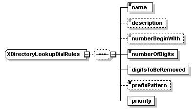

| diagram |  | ||
| namespace | http://www.cisco.com/AXL/API/10.5 | ||
| children | name description numberBeginWith numberOfDigits digitsToBeRemoved prefixPattern priority | ||
| used by |
|
||
| source | <xsd:complexType name="XDirectoryLookupDialRules"> <xsd:sequence minOccurs="0"> <xsd:element name="name" type="xsd:string" nillable="false" minOccurs="1" maxOccurs="1"/> <xsd:element name="description" type="xsd:string" nillable="false" minOccurs="0" maxOccurs="1"/> <xsd:element name="numberBeginWith" type="xsd:string" nillable="false" minOccurs="0" maxOccurs="1"/> <xsd:element name="numberOfDigits" type="axlapi:XInteger" default="0" nillable="false" minOccurs="1" maxOccurs="1"/> <xsd:element name="digitsToBeRemoved" type="axlapi:XInteger" default="0" nillable="false" minOccurs="1" maxOccurs="1"/> <xsd:element name="prefixPattern" type="xsd:string" nillable="false" minOccurs="0" maxOccurs="1"/> <xsd:element name="priority" type="axlapi:XInteger" default="0" nillable="false" minOccurs="1" maxOccurs="1"/> </xsd:sequence> </xsd:complexType> |
element XDirectoryLookupDialRules/name
| diagram | |||||
| type | xsd:string | ||||
| properties |
|
||||
| source | <xsd:element name="name" type="xsd:string" nillable="false" minOccurs="1" maxOccurs="1"/> |
element XDirectoryLookupDialRules/description
| diagram | |||||||||
| type | xsd:string | ||||||||
| properties |
|
||||||||
| source | <xsd:element name="description" type="xsd:string" nillable="false" minOccurs="0" maxOccurs="1"/> |
element XDirectoryLookupDialRules/numberBeginWith
| diagram | |||||||||
| type | xsd:string | ||||||||
| properties |
|
||||||||
| source | <xsd:element name="numberBeginWith" type="xsd:string" nillable="false" minOccurs="0" maxOccurs="1"/> |
element XDirectoryLookupDialRules/numberOfDigits
| diagram | |||||||
| type | axlapi:XInteger | ||||||
| properties |
|
||||||
| source | <xsd:element name="numberOfDigits" type="axlapi:XInteger" default="0" nillable="false" minOccurs="1" maxOccurs="1"/> |
element XDirectoryLookupDialRules/digitsToBeRemoved
| diagram | |||||||
| type | axlapi:XInteger | ||||||
| properties |
|
||||||
| source | <xsd:element name="digitsToBeRemoved" type="axlapi:XInteger" default="0" nillable="false" minOccurs="1" maxOccurs="1"/> |
element XDirectoryLookupDialRules/prefixPattern
| diagram | |||||||||
| type | xsd:string | ||||||||
| properties |
|
||||||||
| source | <xsd:element name="prefixPattern" type="xsd:string" nillable="false" minOccurs="0" maxOccurs="1"/> |
element XDirectoryLookupDialRules/priority
| diagram |  |
||||||
| type | axlapi:XInteger | ||||||
| properties |
|
||||||
| source | <xsd:element name="priority" type="axlapi:XInteger" default="0" nillable="false" minOccurs="1" maxOccurs="1"/> |
XML Schema documentation generated by XMLSpy Schema Editor http://www.altova.com/xmlspy